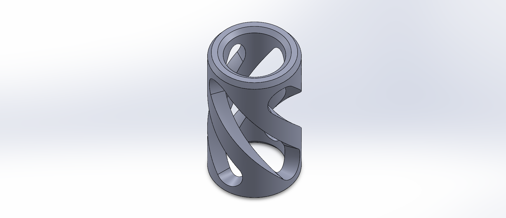
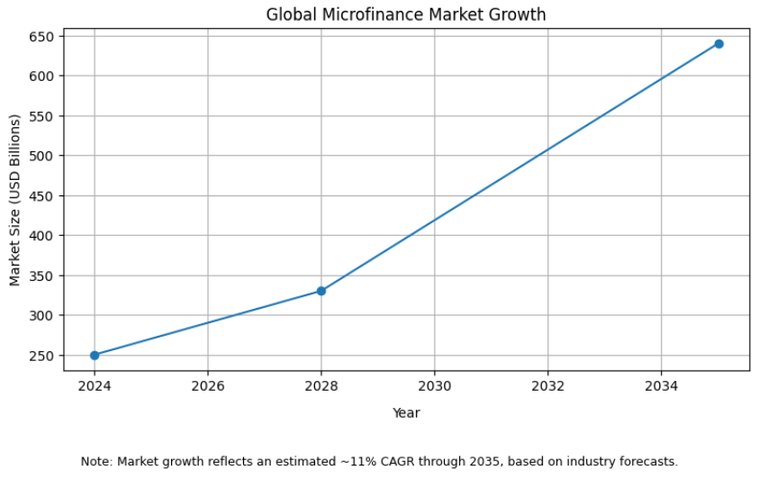

I'm a mechanical engineering student at Rice University with a passion for solving complex problems at the intersection of engineering and business. My experience spans rocket design, nonprofit consulting, and competitive robotics. I'm currently seeking opportunities in engineering consulting where I can apply my technical skills and analytical mindset to help organizations optimize their operations. When I'm not working on projects, you can find me lifting weights, playing poker, or experimenting in the kitchen.
Portfolio
L1 High Power Rocket Certification
Rice Eclipse
Designed and built a complete L1-Class rocket achieving 2,960 ft apogee, increasing projected performance by 180% through iterative optimization.
SolidWorksOpenRocket3D PrintingLaser Cutting
Helical Vented Sleeve CAD Project
Personal Skills Development
Self-directed CAD modeling project to expand my technical skillset and build portfolio content that isn't proprietary, practicing advanced SolidWorks features.
SolidWorks3D ModelingFeature Mastery
Global Microloan Market Analysis
Future Forward Foundation
Conducted comprehensive market research analyzing the $250B global microfinance sector across APAC, Latin America, and MEA regions.
Independently designed and constructed a complete L1-Class high power rocket from the ground up to achieve Level 1 certification. This end-to-end engineering project required meticulous attention to aerodynamics, structural integrity, and recovery systems while working within the constraints of amateur rocketry regulations.
The Challenge
The primary challenge was breaking down one massive engineering problem into manageable sub-systems: airframe design, fin geometry, recovery deployment, structural connections, and flight stability. Each component needed to work seamlessly together while maximizing altitude performance. Additionally, all calculations and designs had to account for real-world variables like wind conditions, motor performance variations, and material tolerances.
Technical Approach
Simulation & Optimization: Used OpenRocket to model rocket performance and run hundreds of simulations testing different configurations. Through iterative design refinements, I increased the projected apogee by 180% from initial concepts to the final design, optimizing factors like fin shape, body tube diameter, and nose cone geometry.
CAD Design & Manufacturing: Designed all custom components in SolidWorks, including bulkheads, centering rings, and motor mount assemblies. Utilized laser cutting for precision fin manufacturing and 3D printing for complex internal structures that would be difficult to fabricate conventionally.
Recovery System: Calculated precise black powder charge amounts on-site to ensure reliable parachute deployment at apogee. This required understanding the relationship between chamber volume, pressure requirements, and altitude-dependent atmospheric conditions.
Systems Integration: The most challenging aspect was ensuring all subsystems worked together cohesively. This meant accounting for how fin placement affects stability, how motor mount design impacts structural loading, and how recovery bay volume influences deployment reliability.
Results
Successfully launched the rocket using a 225N motor, achieving an apogee of 2,960 feet (just over half a mile). The rocket performed exactly as simulated, with stable flight, clean separation, and successful parachute deployment and recovery. Most importantly, this flight earned my Level 1 High Power Rocket certification.
Key Takeaway
This project was incredibly fulfilling because every aspect was entirely my own work. From the initial concept to watching the rocket disappear into the sky, I owned the complete engineering process. It reinforced the importance of iterative design, validated the power of simulation tools, and demonstrated that complex problems become manageable when properly segmented into focused sub-problems.
Helical Vented Sleeve CAD Project

Context: Personal Skills Development Project
Timeline: February 2026
Project Overview
This was a self-directed project focused purely on expanding my CAD capabilities in SolidWorks. I wanted to practice some advanced modeling techniques I hadn't used before and build out my portfolio with work I could freely share, since most of my other engineering projects involve proprietary designs I can't showcase publicly.
The Goal
The main objective here wasn't to design something functional or solve a specific problem. It was about deliberately practicing new SolidWorks features and workflows that I'd either never used or hadn't fully mastered yet. I wanted to get comfortable with techniques that would make me more efficient and versatile when working on actual design projects down the line.
Skills Practiced
Reference Geometry: Created custom planes offset from the base geometry to establish proper sketch references for complex features. This is something I'd used sparingly before but wanted to get more fluent with since it's essential for more sophisticated designs.
Chamfering: Applied chamfers to soften edges and give the part a more finished, professional appearance. Getting comfortable with chamfer controls and understanding when to use them versus fillets was part of the learning process.
Wrap Feature: This was the big one I wanted to practice. The wrap tool lets you project 2D sketches onto curved surfaces, which opens up a ton of design possibilities. I used it to deboss the helical cutout pattern onto the cylindrical surface, which required understanding how to properly set up the sketch, position it relative to the target surface, and configure the wrap parameters.
Circular Patterning: Once I had the initial wrap feature working, I used circular pattern to replicate it around the central axis. This involved selecting the correct axis of rotation and defining the spacing parameters to get even distribution around the part.
Feature Management: Learned how to hide reference planes and other construction geometry that I needed for modeling but didn't want cluttering the final view. Keeping the feature tree organized and managing what's visible versus what's hidden is something that becomes more important as designs get more complex.
What I Learned
The biggest takeaway was getting hands-on experience with the wrap feature, which I'd never really used in depth before. Understanding how to properly set up wrapped geometry and then pattern it opens up a whole new category of designs I can now tackle confidently. I also got better at thinking through the modeling sequence ahead of time, planning which features need to come before others, and setting up reference geometry strategically rather than trying to work around its absence later.
Beyond the technical skills, this project reinforced that sometimes the best way to learn is just to build something for the sake of building it. Not every project needs to solve a real problem or have an end customer. Sometimes you just need to mess around with the tools to figure out how they work and what they're capable of.
Why It Matters
Having portfolio pieces that aren't tied to proprietary work is important for actually being able to showcase what I can do. This project gives me something tangible to point to when discussing my CAD skills, and the techniques I practiced here directly translate to more complex design work. Plus, it was a good reminder that continuous skill development doesn't always have to be tied to coursework or professional projects. Taking initiative to learn new tools and techniques on my own time is something I want to keep doing.
Global Microloan Market Analysis

Organization: Future Forward Foundation (F3 Global)
Timeline: December 2025
Project Overview
Conducted comprehensive market research analyzing the global microfinance landscape to inform F3 Global's strategic expansion decisions. The project required synthesizing data from diverse sources across multiple continents to identify market opportunities, competitive dynamics, and strategic positioning for the foundation's microloan initiatives.
The Challenge
The microfinance sector is fragmented across geographies, business models, and regulatory environments. The challenge was cutting through this complexity to extract actionable insights: Which regions offer the greatest growth potential? What business models are most effective? How can a nonprofit foundation compete with institutional players and fintech disruptors? The research needed to be both comprehensive and decisional, driving real strategic choices rather than just presenting information.
Research Approach
Market Landscape Mapping: Analyzed the $250 billion global microfinance market, categorizing institutions by business model (peer-to-peer, institutional-funded, fintech-enabled) and geographic focus. Identified key players from Grameen Bank's social capital model to emerging fintech lenders like Tala and Branch.
Regional Deep-Dives: Examined market dynamics across APAC (44% of global client volume), Latin America (highest loan volumes), and MEA (13% CAGR through 2030). Analyzed loan size variations, regulatory environments, and digital adoption rates to understand regional nuances that impact strategy.
Competitive Analysis: Evaluated different operating models, from Kiva's intermediary approach with around 35% interest rates due to administrative costs, to Zidisha's direct P2P model eliminating intermediaries, to WeBank's ecosystem integration within WeChat. This comparative analysis revealed opportunities for differentiation.
Trend Identification: Synthesized data on three critical trends reshaping the industry: institutionalization (banks projected to hold 55% market share by 2035), digital transformation (online lending at 15% CAGR), and product diversification (microinsurance growing at 14% CAGR).
Key Findings
The research revealed a market in transition. Traditional MFI models face pressure from both institutional capital (banks entering the space) and technological disruption (mobile-first lenders). The most significant opportunity lies in the MEA region, which combines high growth rates with relatively lower competition. Success increasingly depends on digital capabilities, with marginal delivery costs approaching zero for online platforms.
The 1.4 billion unbanked adults globally represent massive untapped potential, but reaching them requires understanding local contexts. For instance, MFIs in Morocco and Asia achieve 97% female outreach with 84% rural penetration by tailoring approaches to community structures, while fintech lenders in urban markets leverage existing smartphone adoption.
Strategic Implications
Delivered actionable recommendations synthesized in Excel-based financial models and PowerPoint presentations for foundation leadership. The analysis directly informed decisions on geographic expansion priorities, technology investment requirements, and partnership strategies with local MFIs. By quantifying the $5 trillion MSME financing deficit and mapping where that demand is most acute, the research provided a data-driven foundation for F3 Global's strategic planning.
Skills Demonstrated
This project showcased my ability to navigate ambiguous research questions, synthesize information from disparate sources, identify meaningful patterns in complex data, and translate analysis into strategic recommendations. It required balancing breadth (covering global markets) with depth (understanding regional nuances), while maintaining a clear focus on delivering actionable insights rather than just comprehensive documentation.